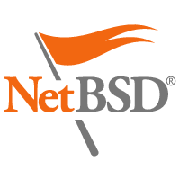
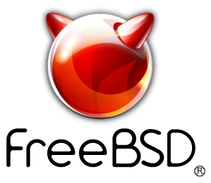
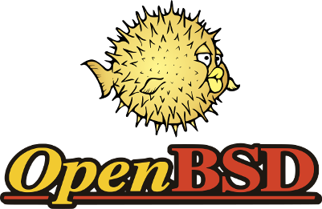
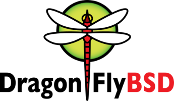

Principais Sistemas BSD




Cresceu na cidade de Bebedouro, interior de São Paulo;
Engenheiro de Computação pela Estácio - UniSEB (Faculdades COC) - Ribeirão Preto;
Começou a programar computadores com 12 anos de idade (fiquei louco cedo);
Ja foi usuário do Linux Conectiva 4.6, Debian (woody), Slackware e Gentoo;
Usuário e hacker de kernel do OpenBSD (quando consegue um tempo);
Implementou um sistema de journaling para o file system do OpenBSD (não oficial);
Fundou o BUG (BSD Users Group) Campinas, pra ter uma comunidade na região onde mora em que possa compartilhar e aprender sobre o uso e desenvolvimento destes poderosos SOs.
https://lhc.net.br
https://www.meetup.com/gdgcampinas/
http://labs.superlogica.com/
Mesmo após mais de 4 décadas os sistemas operacionais UN*X ainda são considerados os mais poderosos, versáteis e flexíveis.
Introduziu o método de desenvolvimento de software por camadas.
Aproxima, traz desafios e diversão para os programadores ao redor do globo \o/
Grupo de cientistas da AT&T e GE juntam forças no MIT com o projeto MultICS (Multiplexed Information and Computer Service) mainframe timesharing system.
Frustração, economicamente inviável, Bell Labs se retira do esforço, mas em Murray Hill, Ken Thompson, Dennis Ritchie, Doug McIlroy e J. F. Ossanna continuaram a procura pelo Santo Graal...
Thompson, Dennis e Cnaday discutem o que os usuários esperam de um SO (Sistema Operacional).
Thompson desenvolveu no seu tempo livre o "space travel".
Thompson começa a implementar o paper file system no PDP-7 e o UNIX começa a tomar forma.
Brian Kernighan sugere o nome UNIX, satirizando o MultICS.
Requisitaram a compra de um PDP-11 pela bagatela de US$ 65.000,00 para uma aplicação comercial pro Departamento de Patentes do Bell Labs.
Thompson tenta usar o Fortran no PDP-7 (O Unix ainda era escrito em uma linguagem assembly), o que não funcionou muito bem, então ele cria a linguagem B.
Ritchie usou o PDP-11 pra adicionar tipos diferentes ao "B", que começou a ser chamado de NB, "New B", e também um compilador para a linguagem que com outros ajustes se transformaria no que conhecemos como linguagem C.
Durante esse longo período, Thompson e Ritchie fizeram o árduo trabalho de reescrever todo o UNIX em linguagem C. Uma das evoluções mais importantes para os sistemas operacionais modernos.
Bob Fabry que esteve no Symposium on Operating System Principles, onde o UNIX foi apresentado pela primeira vez, requisitou a aquisição do código fonte e um PDP-11/45 foi também adquirido para ser usado em tempo compartilhado entre a Ciência da Computação, Matemática e Estatística.
Ken Thompson tira um ano sabático
no Bell Labs e vai para Universidade da Califórnia em Berkeley como
professor visitante.
Ele ajuda os alunos a instalarem a versão 6 do
UNIX e estudantes como Chuck Haley e Bill Joy começaram
ajudar a melhorar o sistema.
Bill Joy começou a compilar a primeira versão do BSD (Berkeley Software Distribution).
1BSD Released - Era de fato apenas
algumas modificações no UNIX 6, mas venderam algumas cópias.
2BSD - vi (versão visual do ex)
3BSD (VAX/UNIX or VMUNIX) - 4.3BSD - Várias versões (muitas
melhorias e até implementação do modelo OSI) até decidirem ir pra
outra arquitetura.
4.3BSD-Tahoe - Primeira versão do BSD que separava código dependente de não dependente da arquitetura.
Net/1 - Primeira
versão do BSD com o intuito de ter um software com distribuição livre
com todas as melhorias feitas pelo "Networking" (rede) de alunos /
voluntários.
Net/2 - Sistema quase todo livre da licença AT&T.
386BSD - Primeiro port para a arquitetura Intel 90386, e
pai dos BSDs mais populares hoje, NetBSD, FreeBSD e OpenBSD.
4/3/2-clause BSD / ISC / MIT / Apache
Você é livre pra fazer o que você quiser com o software.
Se você tiver algum problema, não queira responsabilizar o autor original.
(L)GPLv2 / GPLv3 / AGPL
Você é liver pra usar, redistribuir e modificar o software.
Qualquer alteração feita no software deve ser disponibilizada na mesma licença.

jkb@c123$ sysctl kern.ipc.numopensockets kern.ipc.numopensockets: 2277845
CPU: 37.9% user, 0.0% nice, 13.6% system, 6.6% interrupt, 41.9% idle Mem: 35G Active, 14G Inact, 18G Wired, 4K Cache, 9838M Buf, 27G Free

Lista com todos os softwares Open Source que são distribuídos junto ao PS4 http://doc.dl.playstation.net/doc/ps4-oss/
Não existe pergunta boba, existe bobo que não pergunta e volta sem nenhuma resposta pra casa
Um amigo de um amigo meu
Grupo: https://groups.io/g/bug-cas
Lista de discussão: bug-cas@groups.io
Inscrição por Email: bug-cas+subscribe@groups.io
www.alephbit.com.br
wneto@alephbit.com.br
Twitter: @__wneto
/